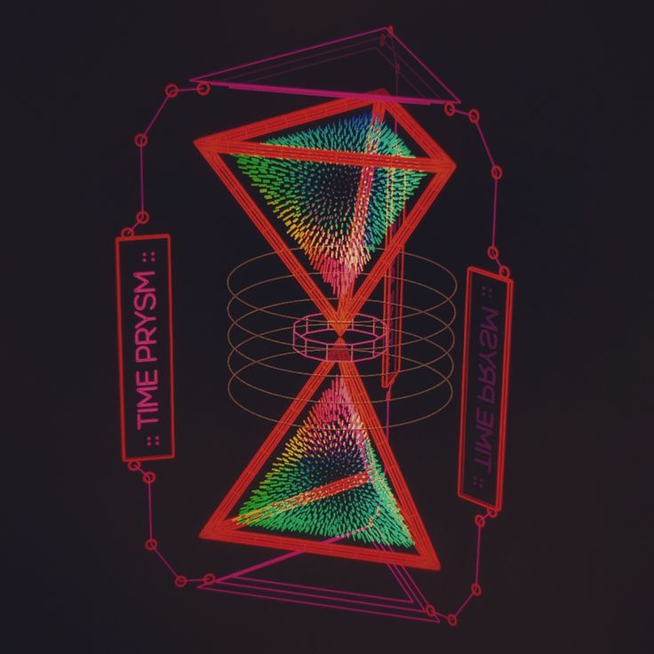

Quantum News
Nuovo traguardo nei computer quantistici
Un team di ricercatori ha raggiunto un'importante pietra miliare nella correzione degli errori quantistici, migliorando la stabilità dei qubit e aprendo la strada a calcoli più affidabili.

Quantum Computing: il futuro dell'IA?
Le aziende tecnologiche stanno esplorando l'integrazione dell'intelligenza artificiale con l'informatica quantistica, promettendo capacità di calcolo rivoluzionarie per l'ottimizzazione dei dati e il machine learning.